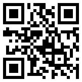
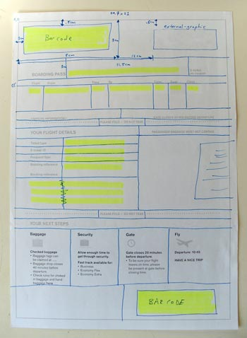
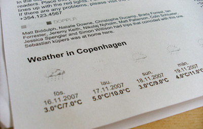
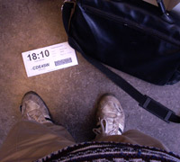
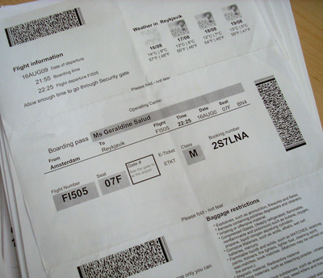
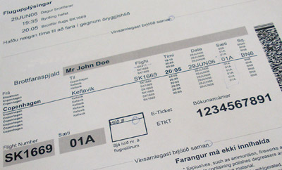

A few years ago, I worked for an enterprise software company and have since served my penance. Looking back, it was great experience. It gave me opportunities to work on large scale projects that I would never have otherwise been able to play with and influence. In late 02007, one such interesting project crossed my desk. I was tasked with developing a printable boarding pass for a major international airlines. This was an excellent opportunity to break out of the boring static world of boarding passes and try to generate some more interesting and ultimately a more useful boarding passes. I didn’t want people to print it out, go to the airport and then throw it away. I wanted it to be printed and used during the entire journey. Sadly, this project never managed to get to its fullest potential for various reasons. Enough time has passed and now that I can discuss the project and I can tell you a little about my thought process during its creation. My version of the boarding pass is in use today (May 02010) having never been upgraded. In many ways it has been superseded by self-checking, there is no need to print anything at home before travelling to the airport, therefore it has probably waned to a point of redundancy within the airlines and industry as a whole. Maybe these ideas will be useful for others and could be integrated into the self-check-in system as well.
The idea behind the printable boarding pass is that it allows you to avoid the long lines at the check-in desk. One of the restrictions from the airlines was that you could only print the boarding pass 22 hours before the flight. Since this was such a small window, it game me an opportunity to infuse the print-out with some dynamic paperNet ideas knowing it would not be too out-of-date by departure.
The IATA is the governing body which overseeing much of the air travel industry. One of their cost-saving measures was to implement a printable barcoded boarding passes for all airlines by 02010. 02008 saw the requirement of airlines to be able to read these barcodes, and shortly after that every boarding passes would be required in this format. This cuts the costs of the traditional paper print-outs with the magnetic backing, to a simpler paper print-out with a 2D barcode, which contains the same information as small squares of ink. The barcode style boarding pass also cuts down the number of check-in desk spaces required, making it more efficient to use the check-in area and pushes the cost of printing from the airlines to the customer. It changed the cost of printing by only a few pennies, but over thousands of flights a day it adds-up quickly.
The amount of information required on the visible boarding pass is rather minimal, most of which is duplicated in the machine readable 2D barcode. This allows a quick reading of your ticket at various points throughout the airport, including security check-points, gate checks and terminal entry points. The rest of the space on the boarding pass was available for me to take some liberties in the organization and design. There is a short list of items required by the IATA, but after that I was free to roam.
A 2D barcode is a matrix of white and black squares which is encoded in 2 directions, horizontally and vertically, hence the name 2D. The technical format used on these boarding passes to create the 2D barcode is called PDF417. There is also some control information on the sides to orient the barcode for the reader. This enables the barcode to be read from any direction, because the reader can internally rotate the barcode to the correct position based on the thick black lines representing the control information. It basically says to the computer “This side up”.
The original boarding pass template design was based on SAS’s boarding pass. This was about 1/3 the size of an A4 page and contained basic information about flights, the carrier and the traveller. This pretty much mimics the traditional boarding pass that you are given at the check-in desk, but it is printable at home and contains the 2D barcode instead of the magnetic strip on the back duplicating the same information. It was a good start to know what was required, but it isn’t a very interesting design.
We knew that our target printout size for the boarding pass was going to be a standard A4 piece of paper, so we decided it was best to use the entire sheet for the boarding pass. Taking a queue from the 1/3 page SAS style, we created a tri-fold A4, mimicking the SAS boarding pass. This gave us two additional empty panes to add information. You can see how we copied the design of the SAS boarding pass for the top pane, the area above the first fold, for our boarding pass. The middle pane, the area between the first and second folds, contained information about the flight and ticket, along with items that were restricted in your luggage. The bottom pane, the area below the final fold, was designed to be a “next steps” process. These “next steps” described what to do about baggage drop-off, security, information about the gate and finally, information about your flight. These were presented in the logic order you flow through the airport.
The design was measured out and the dynamic areas highlighted. This allowed us to see how much of the design is static between print-outs and how much of the page is dynamically data driven.
The boarding pass was originally designed with XSL-FO and the XML feed we were getting from the airlines data provider. Using XSL-FO we designed the information areas as blocks of text, so those were also sectioned off on the paper prototype to help us get a count of how many objects we were dealing with overall, both static and dynamic. Later in the project, we moved to the open source Jasper Reports to generate the final printable PDF.
We took the highlighted paper prototype and iterated on the design to make the most important information easier to find.
The top pane has not changed much, it still contains most of the basic information that is on a traditional boarding passes.
One of the departures from the SAS style was to increase the font-size of your seat assignment. Once you are at your departure gate, most of the information on the boarding pass is no longer relevant. You know your destination, you know the gate number (you are waiting there) and you are waiting for the boarding call, so the actual flight time is not as important. Your biggest concern is where to go once you’re on the plane. By making the seat text a larger font and setting it off in a light-grey box it helps both you and the stewards to quickly visually identify your seat and get you settled faster. By increasing the size and making it easier to read, it minimizes confusion in low-light cabin settings for older travelers or those of us that don’t have perfect 20×20 vision.
The middle pane now contains the “next steps” items. This allows a logical flow down the page. The more important, most used information at the top, the next most used information in the middle, then finally, the bottom pane with the least used. In this iteration, the bottom pane had basic information about how use the barcode reader and some instructions about what to do if the read failed for your boarding pass. It also contained meta information that was useful to the staff, but was not important to the traveller.
The middle pane’s “next steps” included time stamps for each event in the flight process. This would allow for people to more easily know when to arrive at the airport, when they needed to be at the gate, etc. Instead of simply saying “30 minutes before” we explicitly gave the time. This came out of my own personal habits. When flying internationally you are always told to be two hours early, but between EU countries, is that still International? what about England and Ireland? or Iceland and Denmark? In Iceland, flights to Greenland are International, but sometimes they don’t even check passports. Having a more definitive answer from the airlines would help to ease people’s questions and hopefully also keep people from making the wrong assumptions and arriving too late.
We also put the barcode on every pane of the document. The extra redundancy would help because now there were 3 correct possible ways to scan the document. It could confuse the novice traveler into thinking that these are 3 different barcodes and therefore they might not know which to scan, but since the page gets folded it is less obvious that there are actually 3 barcodes. At any given time, with a folded boarding pass, you only see one barcode. This is certainly something that can be addressed if too many travellers get confused, but so far there haven’t been any complaints.
One of the other things that should go without saying, but we had to battle for this, was that the boarding pass must work in only black and white! I don’t know the percentage, but I would venture to guess that people who have access to laser printers have access to black and white versions at the office—and most tech savvy people probably save expensive colour ink by printing in grey-scale. Therefore, the design could not expect colour to be used to highlight, offset or draw attention to any of the areas.
One of the early competitor designs we looked when designing our boarding pass used a nice blue background with white-text. That had two side-effects, it sucked-up loads of blue ink unnecessarily and when printed in black and white, it was white text on a light grey background and was un-readable. I used this to argue for an optimized black and white version.
We started our design only in black and white and then added colour for basic information such as the corporate logo, which we knew still worked when printed in black and white. We also stuck with black text on a white background as a nod to our customers, minimizing their printer ink usage.
We took the paper mock-up and implemented the design in working code, further tweaking the layout. We moved some of the basic meta flight information to the middle pane and added a list of banned items to the bottom pane.
We added a space for gate number. This is something that travellers do not know at the time the boarding pass is printed, but we left an area that they could fill in themselves when the gate number became available on the departure boards.
This is an example of using the affordances of paper. Let people write on it freely! By adding an empty box it encourages two things. First, that people SHOULD actually write on this ticket. Second, it helps people remove items from their mental queue and put it onto paper. It is one less thing they need to remember and worry about forgetting if it’s written down. By adding the box explicitly it gives travelers and area to “safely” write in, and hopefully cut down any clutter than the ticket checkers need to deal with.
This is a simple addition that could have been left out, and is left out on many tickets, but because we added it, it relieves cognitive loads and demonstrates that the airline is thinking ahead and helping you without being pushy.
Since the usage barcode instructions did not take-up much space, we experimented with the inclusion of external data to supplement the boarding pass. A few that quickly came to mind were weather and fellow travellers. Using a weather API we pulled in a five day forecast for the destination city. This would help travelers to quickly see what they might want to pack or wear last minute. To access fellow travellers we experimented with using the Dopplr API. Dopplr is a service for frequent travellers to help them coordinate meet-ups and random co-incidences in the same city. The other possibilities for external data sources included upcoming.org events listings, wikipedia entries, currency exchange rates and other APIs.
The Dopplr and other external data integration was too far ahead of its time for the client’s target market, but the weather data did manage to make the cut and exists in the boarding pass today. This is partly due to the fact that you cannot print your boarding pass more than 22 hours earlier. Therefore, the weather data is fairly accurate.
Some of these sources for external data have been re-used on other projects that related to the trip, but unfortunately not directly in the boarding pass.
In the next iteration of the mock-up, the client was not a fan of the multiple size fonts, so we consolidate the number to just a few different sizes. I personally like the difference size, it gives a hierarchy of importance, but then again I’m not a professional designer.
They also did not like the “next steps” as a time table, so it was down played and moved to the bottom pane. Understandably, all the times were the same font-size, so it was difficult to identify the flight time from the arrival time from boarding time. To rectify this, we decided to make the flight time so big you couldn’t miss it. We asked ourselves, “What is the most important aspect of the flight” and the flight time is what we determined, so it became the central item on the page. The other nice aspect of the larger font-size is that older travelers should have no problem reading the most important information: when the flight leaves.
Ultimately, this design was dropped. Possibly because it did not look “professional” or fit with their design standards, or maybe it just looked “cheap” and “cluttered”. The massive boarding time is one feature that I personally wish would have made it into the final design. It has high visual impact and actually does serve as an accessibility aid for older travelers and those of us with poor eye sight. My quick test was to drop it the boarding pass on the floor, from my height standing, I could still read the departure time.
At times in these mock-ups we had more room on the page that data, other times we had more data than available space. Having such a large time stamp for the departure time was forcing us to have less data and be more picky about what made it into the design, but by reducing the font-size we gained additional space, which in turn was unnecessarily filled with data that competed with everything else for attention.
Making and using paper prototypes really helped the process. We were quite far along in the design process that we realized we had made a mis-calculation. From the start we tried to make the logical flow of data from top to bottom, from most important to least. Having a printed hard-copy was a real benefit. We printed boarding passes and carried them around, folded them, smashed them, spilled coffee on them and everything in between. What we originally missed was what happens when you fold the A4 into thirds. The top and bottom panes will overlap each other. One must cover the other as they are folded back. Therefore, you could have the problem of the very least important data overlapping the most important. The only pane that was never covered by others was the middle pane. So we swapped the information that was on the top pane to the middle so it was always visible. The full “next steps” list turned into the single flight time number, which is also replicated on the middle pane. The bottom pane contains only items you are not allowed to bring on-board and instructions along with a picture of the barcode machine to help reduce questions about how to actually check-in.
Due to some regulations, we converted the final boarding pass instance to English only, which removed a lot of linguistic and spacing issues. You can see that the “next steps” table has made a small come back on the top pane and original SAS design needed to be expanded on to accommodate a full 9 possible connecting flights. Having a list of 9 possible connecting flights required some thinking and a redesign. Some airports required a list of all connecting flights, even previous ones. So there was the difficulty of how to draw attention to which flight this printed boarding pass was for. So we experimented with different font-sizes and underlining the flight which the ticket corresponds too.
The printable boarding pass was deployed on March 8th, 02008. As the usage picks-up I am sure there will continue to be tweaks to the layout and to information on the print-out. This was not an attempt to make the world’s greatest boarding pass in the first try and we made a lot of mistakes along the way, but we tested some innovative ideas, some made the cut others didn’t. Hopefully, the design process and some of the usability ideas that we came-up with will make it into other boarding passes or related projects.
Additional: Changes for class related seating
November of 02008, the client added a new class to their ticket structure. They went from two distinct classes, Economy and Business Class to three, Economy, Economy Plus and Business Class. Previously, the boarding passes did not have the class distinction, which now needed to be added. Then came the problem of the lounges. Without any class information, people were unsure if they could enter the executive lounge or not. The simplest way to solve this was to begin to add the class information onto the boarding passes which we did. In our prototype testing, we also realized that it would be very easy for someone to change the text “Economy Class” to “Business Class” after downloading the PDF, but before printing it on their way to the airport. It also meant that whom ever was checking boarding passes at the executive lounge door had to look all over the A4 boarding pass to find the class distinction. Besides just printing “Class: Y” on a boarding pass, we planned to radically alter the masthead if you were in Business Class. This had three quick advantages. By inverting the colors, from a blue logo on a white background, to a white logo on a blue background, it made it immediately recognizable from a distance that the boarding pass was for the upscale Business Class. It became more difficult to forge a fake Business Class boarding pass. Finally, it demonstrated to the customer that they were special, they were the only ones with a different boarding pass than all the other classes. As the usage pattern of the boarding passes increases we are constantly learning about how people are using it. From this we have also made proposals to include currency exchange rates. So along with the dynamic five day weather forecast, travelers could get a rough idea of how much their money is worth abroad.
After leaving this project a year ago, I’m not sure what has happened. I know you can still print them and to my knowledge not much has changed. I suspect that the self-check-in machines have pretty much obsoleted this printable-boarding pass. The next logical steps are to handle everything via email and SMS for smart phones. None of this information is proprietary knowledge or contains any trade secrets. Hopefully it was useful to see the thought process behind creating dynamic paperNet style tickets. This could easily be replicated for other services such as trains, boats, movie and concert tickets, etc.
An absolutely fascinating walkthrough of your process. It’s disappointing they didn’t implement the final ideas; as a frequent flyer I would have thanked you for them, not least the larger than life boarding time (all travellers would thank you for that).
The piece gives a deep insight into all of the aspects of the design process and is something I’ll be pointing my students towards as required reading. Thanks for sharing your insight.